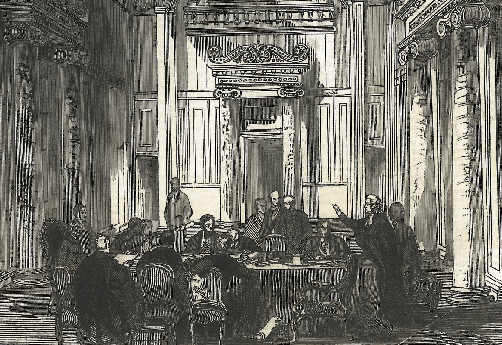

Chapter 19
The Relief Commission Takes the Ledgers
Back in the winter of 1919, a clerk in the Halifax Relief Commission office on Hollis Street opened a steel drawer and drew out a claim form that had arrived that morning. The paper was cheap, war-rationed stock, already softening at the creases where a widow had folded it into her coat pocket. The clerk’s pen was a Waterman, government issue, filled with ink the color of dried blood. He wrote the date—February 3, 1919—in the first column of a register already six hundred pages thick, then turned to the substance of the claim.
The form described a house on Roome Street, Richmond, destroyed at 9: 04: 35 on the morning of December 6, 1917. The claimant was a woman named Catherine McIntyre, fifty-three years old, occupation: charwoman. She sought compensation for the death of her husband, a dock labourer, and for the loss of their furniture, described in her own hand as bedstead, table, four chairs, stove, dishes, linens. The clerk copied this inventory into the register without comment. He had entered twelve thousand such claims. He knew that dishes could mean a family’s single set of earthenware, that linens often meant sheets that had served as shrouds. The register gave no space for this knowledge. Column seven required only a valuation, in dollars.
The clerk consulted a tariff. Furniture for a working-class household: maximum forty dollars. Loss of husband’s earnings: calculated at three years’ wages, discounted for age. He made his notations in a hand trained to be legible to auditors. The total came to $847.50. He entered this figure in column twelve, initialled the entry, and placed the form in a wire basket for the visiting officer’s review. The entire transaction had taken eleven minutes. Outside, snow fell on Halifax, the third storm of a hard winter. The clerk did not look up. His register was nine months behind schedule.
The Halifax Relief Commission had been established by federal order-in-council on 22 January 1918, afterwards incorporated provincially and given uniquely broad powers by act of the Nova Scotia legislature. Its mandate was to administer relief and reconstruction in the devastated districts of Halifax and Dartmouth, to compensate the injured and the bereaved, to rebuild where rebuilding was possible, and to pension where it was not. The legislation granted the Commission powers normally reserved for courts: it could summon witnesses, compel testimony, adjudicate disputes, and enforce its decisions. It could also, crucially, borrow money against the credit of the Dominion government, creating a fund that would eventually exceed thirty million dollars. This was not charity. It was a statutory obligation, and the Commission treated it as such.
The Commission’s first chairman was Thomas Adams, a Scottish-born town planner imported from Ottawa to impose rational order on catastrophe. Adams understood that relief was architecture in advance of building. Before a single house could rise in Richmond, someone had to determine who deserved a house, in what order, at what cost, and according to what proof. The Commission’s clerks, assessors, and visiting officers became the instruments of this determination. They carried measuring tapes, claim forms, and the authority to transform disaster into data.
The transformation required translation. A shattered neighbourhood had to become a file. A widow’s grief had to become a pension coefficient. A child’s burns had to become a disability rating, scored against actuarial tables borrowed from the federal civil service. The Commission did not invent this translation. It inherited it from the military pension systems of the Great War, from the workmen’s compensation boards of Ontario and British Columbia, from the Poor Law traditions of Nova Scotia itself. But it applied these systems with unprecedented scope and precision. Every claimant in Richmond became a case. Every case became a ledger entry. Every ledger entry became a financial obligation that would outlast the reconstruction, the inquiry, and the war itself.
Consider the journey of a single claim. Catherine McIntyre’s form, entered on February 3, 1919, was assigned to a visiting officer, a former insurance adjuster from Truro. His instructions, printed in a manual of 1918, required him to verify the fact of loss, the extent of loss, and the character of the claimant.
He travelled to Richmond on February 7, finding Roome Street still largely vacant, the lots cleared of debris but unbuilt. McIntyre was living in a temporary cottage provided by the Commission itself, one of four hundred such structures erected in the first year.
He interviewed her in this cottage, recording her answers on a supplementary form. Yes, she had been married to Daniel McIntyre for twenty-seven years. No, she had no marriage certificate; the church where they wed had been destroyed. Yes, she could produce witnesses: her sister, her husband’s foreman, a neighbour who had attended the wedding. The visiting officer noted these names and scheduled their examination.
The absence of documents was routine. The explosion had destroyed not only houses but the records of houses: church registers, insurance policies, wage books, baptismal certificates. The Commission developed procedures for this absence. Witness testimony could substitute for written proof, provided two credible witnesses concurred. Community reputation could establish identity, provided the claimant had lived in Richmond before the explosion. The visiting officer’s judgment, recorded in a narrative report, could overcome formal deficiencies if the narrative was detailed and the officer’s record unblemished. These procedures were not laxity. They were adaptations, developed through thousands of cases, to the reality that catastrophe erases the evidence of itself.
The visiting officer’s report on McIntyre ran to four pages. He described the site of her former house, now a vacant lot marked by a concrete foundation. He recorded the testimony of her sister, her husband’s foreman, and the neighbour. He assessed her character as sober, industrious, and truthful, the standard formula for claimants without adverse marks. He recommended full compensation, with a pension for widowhood calculated at twelve dollars monthly for life, or until remarriage. The report passed to the Commission’s assessment committee, which met weekly in the Hollis Street office. The committee approved the recommendation on February 21, 1919. The pension began on March 1.
This was not the end of McIntyre’s file. It was the beginning of its administrative life. The Commission’s ledgers recorded not only the award but its continuation: monthly payments, changes of address, medical examinations (required annually for pensioners under sixty), suspensions for absence, resumptions for return. McIntyre’s pension continued for twenty-three years, until her death in 1942. The ledger recorded each payment, each verification, each adjustment. The file accumulated bulk: receipts, doctors’ certificates, correspondence with her landlord, eventually a death certificate and a final accounting. When the Commission was dissolved in 1976, its archives filled two hundred and forty feet of shelving. McIntyre’s file occupied three inches of that space.
The scale of this administrative enterprise is difficult to grasp without entering the Commission’s working world. In 1919, the Hollis Street office employed forty-seven clerks, twelve visiting officers, six medical examiners, four accountants, and a legal staff of three. They processed claims at a rate of two hundred per week, each claim requiring an average of six distinct administrative actions: receipt, assignment, investigation, assessment, approval, and payment. The Commission maintained seventeen separate registers, each with its own protocol. Register A recorded property losses. Register B recorded personal injuries. Register C recorded deaths and the pensions payable to dependants. Register D recorded temporary relief—food, clothing, medical care—provided before final determination. The registers were cross-referenced, audited monthly, and bound annually in volumes that served as legal evidence in subsequent disputes.
The logic of these categories was not self-evident. It had to be constructed through conflict. A man with a crushed leg might claim under Register B for injury and under Register A for lost wages, but the Commission’s rules permitted only one primary classification. A widow with children might receive a pension for herself and separate allowances for each child, but the allowances terminated at age sixteen while her pension continued, creating families whose total income dropped abruptly when a son found work. A man partially disabled might be judged capable of suitable employment and denied a full pension, but the Commission’s definition of suitable excluded work he was trained to perform, forcing him into lower wages or dependence. These were not errors. They were the necessary consequences of translating infinite particularity into finite categories.
The Commission’s most difficult translations concerned the interval between the ships’ impact and the detonation of the Mont-Blanc’s cargo: the twenty minutes when visible hazard drew observers to their deaths. The legal and medical determination of who died in the immediate blast, as opposed to who died from subsequent fire or collapse, affected compensation rates, pension eligibility, and the apportionment of liability between French and Norwegian sources. The Commission developed a protocol for this determination. Deaths occurring before 9: 04: 35 were classified as collision casualties, compensated at lower rates because attributed to misadventure rather than explosion. Deaths occurring at or after 9: 04: 35 were explosion casualties, entitled to full compensation. The distinction required precise testimony about the moment of death, often from survivors whose own injuries impaired their memory or perception.
The case of a labourer who had been watching the Mont-Blanc burn from a boarding house window on Barrington Street illustrates this precision. The explosion shattered the glass, drove fragments into his chest, and collapsed the wall behind him. He was found alive but unconscious, and died at the military hospital at 11: 47 a. m.
His widow claimed explosion compensation. The Commission’s medical examiner, reviewing the autopsy report, determined that death resulted from traumatic shock and hemorrhage following the blast. The claim was allowed.
But in the case of a schoolteacher who had been walking on Gottingen Street when the blast threw her against a building, the same examiner determined that death resulted from skull fracture caused by striking the structure, classifying the death as a secondary consequence of explosion damage rather than the explosion itself. The claim was reduced by fifteen percent. The distinction was technical, defensible, and invisible to the claimant. The schoolteacher’s widow received her reduced pension without explanation of the calculation.
These classifications accumulated into a portrait of the disaster that was simultaneously comprehensive and partial. The Commission’s ledgers recorded 1, 963 deaths definitively attributed to the explosion, 581 serious injuries, and 9, 000 property losses. They recorded $18, 000, 000 in compensation paid by 1920, with $12, 000, 000 more committed in future pensions. They recorded the demographic profile of loss: the concentration in Richmond, the disproportion among working-class households, the prevalence of widowhood among women aged forty to sixty. What they could not record was the quality of the loss: the particularity of a house, the texture of a marriage, the sound of a voice. The ledgers translated these into exchange value, then into monthly payments, then into actuarial reserves. The translation was not false, but it was not complete.
The Commission’s work generated its own conflicts. Claimants disputed valuations, challenged categorizations, appealed rejections. The Commission established an internal appeals process, then a review board, then finally a procedure for judicial review. By 1920, the Nova Scotia Supreme Court had heard forty-seven appeals from Commission decisions, establishing precedents that constrained the Commission’s discretion. The courts tended to favour claimants in cases of documentary deficiency, requiring the Commission to accept oral testimony where written proof was destroyed. They tended to favour the Commission in cases of valuation, deferring to administrative expertise in the assessment of property. The result was a body of administrative law specific to explosion relief, cited in subsequent compensation cases across Canada.
The most persistent conflicts concerned the Commission’s power to determine eligibility. The legislation granted relief to persons who had suffered loss or damage from the explosion, but defined neither persons nor loss with precision. Were boarders entitled to compensation for destroyed personal property, or only householders? Were adult children living with parents entitled to independent claims, or only as dependants? Were businesses entitled to compensation for goodwill—the value of customer relationships, reputation, location—or only for physical assets? The Commission answered these questions through practice, then codified the answers in regulations, then defended them in court. Each answer created a boundary, and each boundary generated disputes at its margin.
The case of the Chinese laundry proprietors illustrates this boundary-making. Sixteen Chinese-owned businesses had operated in Richmond before the explosion, mostly laundries and small groceries. Their owners claimed compensation for equipment, stock, and lost earnings. The Commission’s initial response was to treat these claims as routine, but in 1919 a question arose about residency status. Several proprietors had arrived in Canada under the head tax system, paying the $500 entry fee required of Chinese immigrants since 1885. Their businesses were registered in their names, but their families remained in China, and their own presence in Canada was legally precarious. The Commission’s legal staff determined that compensation for lost earnings required proof of domicile—permanent residence with intent to remain—and that the proprietors’ divided lives, with families abroad and uncertain immigration status, precluded such proof. The claims were reduced to physical assets only, eliminating the substantial sums claimed for lost business.
This determination was not publicly announced. It appeared only in the internal case files, the legal memoranda, the adjusted valuations. The proprietors appealed. The review board upheld the Commission’s position. The Supreme Court declined to hear further appeal, noting that the Commission’s discretion in eligibility matters was necessarily broad, given the magnitude of the disaster and the impossibility of legislative precision. The Chinese laundry proprietors received their reduced compensation in 1920. The Commission’s ledgers recorded the payments without notation of the dispute. The boundary had been drawn, tested, and confirmed.
The Commission’s administrative power extended beyond compensation to reconstruction itself. The devastated districts were cleared, surveyed, and replanned according to principles developed by Thomas Adams and his staff. The new street grid was wider, the lots larger, the building codes stricter. Property owners were offered exchanges: their old lots for new ones, with cash adjustments for differences in value. Those who refused exchange were bought out at Commission-determined prices. Those who refused sale faced expropriation, permitted by the Commission’s enabling legislation. The reconstruction of Richmond was thus simultaneously relief and urban renewal, compensation and social engineering.
The ledgers recorded this double character. Register E, opened in 1919, tracked reconstruction accounts—the costs of land acquisition, demolition, surveying, street building, and lot preparation. These costs were charged against the Commission’s general fund, then recovered through sales of the improved lots to private builders. The accounting was complex, involving allocations of overhead, depreciation of equipment, and adjustments for inflation. By 1921, the Commission had spent $4, 300, 000 on reconstruction infrastructure and recovered $2, 100, 000 from lot sales. The remaining $2, 200, 000 was written off as unrecoverable relief expenditure, a category that appeared in the Commission’s annual reports without further explanation.
This accounting concealed as much as it revealed. The unrecoverable sum included the cost of clearing lots whose owners had died without heirs, whose titles were disputed, or whose property had been so fragmented by inheritance that no single claimant could convey clear title. It included the cost of streets built through former house sites where no owner could be found, or where found owners refused to convey. It included the cost of land expropriated from owners who challenged the Commission’s valuation in court, then settled for sums higher than the original offer. These were not inefficiencies. They were the necessary costs of converting a neighbourhood of established property into a neighbourhood of transferable real estate.
The Commission’s clerks understood this conversion differently at different levels of the organization. The senior accountants, trained in municipal finance, saw reconstruction as a balance sheet problem: maximizing recovery, minimizing loss, maintaining the Commission’s credit. The visiting officers, trained in insurance adjustment, saw it as a negotiation problem: settling claims at levels that satisfied claimants without exhausting funds. The clerks who entered data in the registers, who matched receipts to vouchers, who balanced the daily cash statements, saw it as a volume problem: processing the work that arrived, keeping the current account clear, preventing backlog. None of these perspectives was wrong. None was complete.
The most revealing perspective may be that of the pensioners themselves, preserved in the Commission’s correspondence files. Catherine McIntyre wrote to the Commission three times after her pension began: in 1921, to report her change of address to a new cottage on Creighton Street; in 1927, to request an advance against six months’ payments for dental work; in 1934, to inquire whether her pension would continue if she moved to Boston to live with her sister. Each letter was answered promptly, the facts recorded in her file, the appropriate determination made. The 1927 advance was granted, with repayment deducted from subsequent payments. The 1934 inquiry was answered affirmatively: the pension was payable wherever she resided, provided she remained unmarried and reported her address annually. She did not move to Boston. She died in Halifax in 1942, in the same cottage where she had lived since 1918.
Her file was then transferred to Register F: Deceased Pensioners, Final Accounts. The Commission calculated her overpayment (three days between death and notification), her unpaid balance (none), her estate’s entitlement to a burial allowance (twenty-five dollars). The final entry in her ledger was dated March 15, 1942. The clerk who made it was not the clerk who had opened the file in 1919. The Commission had turned over its staff three times in the intervening years, as temporary wartime employees returned to civilian life, as the postwar recession reduced appropriations, as the Depression and recovery reshaped public employment. The ledgers continued. The categories persisted. The obligation remained.
By 1919, the Commission had established what no court could establish: a durable relationship between the disaster and its consequences. The Wreck Commissioner’s inquiry had determined fault. The Supreme Court and Privy Council had divided blame. But the Relief Commission determined who would eat, who would sleep indoors, whose children would be schooled, whose wounds would be treated. It made these determinations not once but continuously, through the monthly cycle of pension payments, the annual cycle of medical examinations, the episodic cycle of appeals and adjustments. The disaster, in its administrative form, had no terminus. It was a continuing obligation, inscribed in ledgers that would outlive every participant.

The Commission’s records thus constitute a second history of the explosion, parallel to the history of collision, fire, and blast. Where that history moves toward a moment—9: 04: 35, the detonation of the Mont-Blanc’s cargo—the administrative history moves away from it, extending through decades of pension payments, reconstruction projects, and legal disputes. The two histories intersect at the point of translation: the moment when physical destruction becomes financial obligation, when a house becomes a valuation, when a death becomes a pension coefficient. This translation is not neutral. It shapes what can be remembered and what must be forgotten, what can be claimed and what must be abandoned, what can be compensated and what must be borne.
The Commission’s ledgers have created a durable financial obligation, but they have not rebuilt a single street. The administrative verdict now presses against the physical reality of the ruined district: the cleared lots await construction, the pensioners await housing, the categories await the human beings they were designed to serve. On Hollis Street, the clerks close their registers for the day. The snow continues. The harbour, visible from the upper windows, carries ships whose manifests no longer require the scrutiny of December 1917, but whose passage still depends on the channel where the Mont-Blanc burned. The file is open. The obligation continues. The street remains to be built.